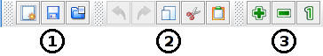
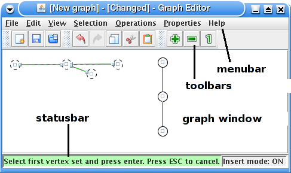
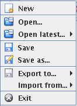
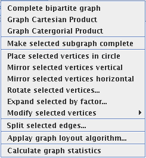

Introduction
The program is a graph editor developed for the mathematical
field of graph theory. The program is crated on request of Klas
Markström at the mathematical department in Umeå University
as a Bachelor thesis project.
Purpose
The main purpose of the graph editor is to make it easy to edit and
create graphs that are used to illustrate theories and ideas in the
mathematical field of graph theory. Many graph editors exist but just a
few are developed with graph theory in mind and of them almost
none are updated. Therefore there is a gap that this editor tries
to fill.
Main functions and features
The program's main functionality is to edit, save and open graphs. This is described in the help section editing graphs.
Other features are for example, graph operations and automatic embedding
algorithms etc. The functions are summarized in the following list:
- Functions for copying and pasteing part of the graph
- Functions for unlimited undo and redo editing commands
- View functions for zooming in and out the view of the graph and to center the current graph
- Selection function to select parts of the graphs depending on the current selection (e.g. select neighbours)
- Graph operations and other graph manipulation functions
- Export functions to export the graph to other graph file formats:
- Graphviz dot-file format
- GraphML
- Graph Modeling Language (GML)
- File format compatible with Mathematica Combinatorica software
- JPEG image file format
- PNG image file format
- Mathematica compatible file format
- Neighbor lists
- EPS image file format
- Import functions to import graphs from other file formats:
- Random graph importer that creates a random graph from a number of vertices and a number of edges.
- Mathematica compatible graph file format
Main window and toolbars


The main window has four head components that are marked in the figure above. They are described in the list below:
- The graph window is the place where graphs are edited and displayed. How editing is performed is described in more detail in the section called editing graphs.
- The menubar contains a number of menus to choose operations from. They are described in more detail in the section called Menus and their operations.
- The toolbars are used to fast access operations that are also in the menus. You can choose to hide the toolbars by using the show toolbars menu that is under the properties menu. The descriptions below correspond to the toolbar with the same number in the picture of the toolbars above.
- The file toolbar is used for some basic file operations. There
are buttons on it to create a new graph, save the current graph and to
open a graph from a file.
- The edit toolbar is used for some basic edit operations that
also exists under the edit menu. The edit commands in the toolbar are
for undo, redo, copy, cut and paste.
- With the view toolbar you can zoom in/out and set the zoom-level to the default.
- The statusbar is used to give varying information to the
user. As default the number of vertices and edges and selected vertices
and edges in the graph are displayed. The status bar is also used to
give hints to the user of how to interact with the program. In the
picture above the status bar contains a hint to the user during a graph
operation that requires several interaction steps.
Introduction to editing
When the program starts it displays an empty graph in the graph
window. The graph window is the component
in the program window that is located in the center of the screen. The
computer mouse is used to edit the graph.

Editing modes
There are two editing modes, one is called insert
mode on and another is insert mode off.
The current is indicated in the right corner
of the status bar at the bottom of the window. The insert
mode on is typically used to insert vertices and edges
into the graph. The insert mode off is
typically used to move vertices.
Ways to switch editing mode
The easiest to switch editing mode is to use the space key
on the keyboard. You can also click on the edit menu and
select insert modeH or right click in the editing window to get a menu where it is possible to change editing mode. Holding down the A-key wil temporaily change and it will only stay as long as you hold down the key. The A-key is intended for
situation when you only want to do something fast in the other editing
mode and after that go back to the original
Selection and related commands
nMany of the commands that can be performed on the graph are dependent on which part of the graph is selected. To select one edge or vertex click on the vertex or edge you want to select. To select all
vertices and edges in an area you can press the mouse button in one
corner of the area and move it to the opposite corner and then release it. Press the control button on
the keyboard to keep the selection when you are selecting more edges or
vertices.
Delete vertices and edges
To delete vertices or edges, first select the vertices and edges you
want to delete, then use the delete
or backspace
key on the keyboard.
You can also delete by using the delete menu item in the
menu that comes up when you right click in the graph window.
To edit in insert mode
The intention of the insert mode is to make it easy and intuitive to put in vertices and edges in the graph.
The only action that is needed to put in a new vertex is to click
with the mouse on the position where you want the vertex. The position
where you click needs to be empty if it is not the object at the place
you click will be selected and no new vertex will be created. To create
an edge between two vertices, press the mouse button in the middle of one of the
vertices and drag the mouse with the mouse button down, until the mouse
pointer is in the middle of the other vertex and then release the mouse
button.
To get a menu with commands click with the second mouse button in the
graph window. The commands are different depending on the selection of vertices and
edges.
Not insert mode
The intention of not insert mode (or insert mode off)
is to make it easy to move vertices and modify a currently existing
graph without adding new vertices and edges. It is also possible to add
vertices in this mode but it is much less intuitive than in the insert mode. To add vertices click with the right mouse button on an empty area and select Insert vertex.
To move vertices in this mode it is just to press the mouse button
when the mouse pointer is in the middle of a vertex and drag the mouse
with the mouse button down until the mouse pointer is at the position where you want to place it.
To get a menu with commands click with the second mouse button in the
graph window. The commands are different depending on the selection of vertices and
edges.
Merge vertices
It is possible to merge two vertices in the not insert mode
so that the resulting
vertex is neighbour to all vertices that the vertices in the merging are
neighbours to. To merge two vertices press the mouse button in the
center of a vertex and drag the mouse so that the mouse pointer is at
the center of the
vertex you want to merge it.
The file menu and its content

The file menu contains operations that has to do with files.
The operations in the menu are described in the list bellow.
The list is ordered in the same order as the menu items in the file
menu.
- The New command opens a new window with an empty graph.
- The Open... command opens a file chooser dialog to open a file from.
- The Open latest... menu item has a sub menu which
contains a list of recently used files. The list is ordered with the
latest used file in the top of the list. If you click on one of them a
new window with the corresponding file will be opened.
- The Save command saves the graph if it is already
associated with a file. If it is not associated with a file a dialog box where it is possible to
select a file to save to will be displayed.
- The Save as... command will show a dialog box where it is possible to select a file to save the graph to.
- The Export to... menu item will show a menu with file
formats it is possible to export the graph to. For more
information see the section about export.
- The Import from... shows a list of possible import alternatives. For more information see the section about import.
The edit menu and its operations

The edit menu contains operations that are used for the editing or
effect the editing in some way. The operations in the menu are described in the list
bellow. The list is in the same order as the menu items in the menu.
-
The undo command makes the last operation undone. The number of undo commands that is possible to perform is unlimited.
- The redo command cancels the last undo command.
- The cut command first saves all
selected graph objects so they can be pasted with the paste command
later and then removes them.
- The copy command makes a copy of the
selected objects in the graph so they can be pasted with the paste
command
- The paste command paste the saved
object from the cut or copy commands in the graph window. It is possible to paste
parts of graphs that have been copied or cut from other graph windows.
- The Insert mode alternative can be set
to on and off below
and not insert mode for more information.
The view menu and its content

The view menu contains operations that change the view of the graph in some way.
The operations that are in the menu are described in the list
below. The list is ordered in the same way as the menu items.
- The Zoom in command zoom the current graph. This
means that the size of everything is increased. If you want to
expand the graph so that the distance of the vertices increases but still
have the same size of the vertices and edges then look at the expand selected by factor command in the operations menu.
- The Zoom out command is the opposite of the zoom in command. It decreases the size of the graph.
- The Default command sets the zoom level to the default.
- The Center command centers the graph in the middle of the window. The center of the graph is the center of least
bounding rectangle that contains all vertices.
The selection menu and its content

The selection menu contains operations that are used to select different
parts of the graph. All commands except the select all requires that at least one vertex is
selected. Therefore they are disabled when no vertex is selected.
The operations in the menu are described below. The list is ordered in the same order as the menu items in the
selection menu.
- The Select all command selects all vertices in the graph.
- The Select neighbour command selects all neighbour vertices to the currently selected vertices.
- The Select reachable command selects all vertices that are reachable by only walking on the edges from the selected vertices.
- The Select other command unselects all selected vertices and selects all previously not selected vertices.
The operations menu and its content

This menu is also available under the menus that come up when you click with the right mouse button in the graph window.
The menu contain commands that perform some kind of operation on
the graph. Most operations change the graph, but there is also one command
that traverses the graph to take information from it, namely Calculate graph statistics.
The commands have been divided by lines in the menu into categories.
All menu items in the same category are similar to each other in some
way. That has been done to make it easier to
find a certain command. The description of the menu commands below is
also divided in the same way. The description marked with the number
one describes the first category from the top of the menu and so on.
- The first category contains operations or graph products that need two subgraphs. They are selected by the user in two steps:
When a command has been started by a click on a menu item in the
category the statusbar in the bottom of the window displays a message.
The message tells the user to select the vertices that is in the first
subgraph and then press enter. When enter is pressed the user can
select the second subgraph in the same way. Because the operations need
two disjoint vertex sets it is not possible to select vertices in the
first set when the second is being selected. They are therefore marked
with a red cross. To cancel a started operation the user can press the
escape key.
The operations in this category is:
- The Complete bipartite graph operation creates a
complete bipartite graph of two vertex sets. The operation does not
remove edges that are already there. A complete bipartite graph made up
by two vertex sets A with n vertices and B with m vertices is denoted by Km,n
and is a graph where every vertex in A is connected to all vertices in
B and every vertex in B is connected to all vertices in A.
- The Graph Cartesian Product operation creates a graph that is the Graph Cartesian Product of two graphs G1 and G2. The resulting graph is placed to the left under the orginal graph in the graph window. For a definition of the Graph Cartesian Product please see, http://mathworld.wolfram.com/GraphCartesianProduct.html.
- The Graph Categorical Product operation creates a graph that is the Graph Categorical Product of two graphs G1 and G2. The resulting graph is placed to the left under the orginal graph in the graph window. For a definition of the Graph Categorical Product please see, http://mathworld.wolfram.com/GraphCategoricalProduct.html.
- This category contains operations that only use one graph as
operand. The operand is the graph created by the selected vertex set.
The menu item in this category is only enabled if one or more vertices
is selected. At the moment there is only one operation in this
category. The Make selected subgraph complete operation makes
the subgraph created by the selected vertex set to a complete subgraph
by adding edges so every vertex is neighbour to every other vertex in
the vertex set.
- This category contains operations that modify the position of
selected vertices. The menu items is only enabled if any vertices are
selected. The operations in this category is listed below with an
explanation of what they do:
- The Place selected vertices in circle operation
reorganize the selected vertices so they are placed in the edge of a
circle with the same distance between each vertex. The circle's
diameter is equal to the greatest of the width and the height of the
least bounding rectangle of the selected vertices. The circle's center is in
the center of the bounding box.
- The Mirror selected vertices vertical operation mirror
all selected vertices over the x-axis through the center of the
least bounding rectangle of all selected vertices. To mirror a
vertex over a vertical axis is to change its horizontal position so
it is on equal distance from the axis but on the opposite side.
- The Mirror selected vertices horizontal does the same thing as Mirror selected vertices vertical does but over the horizontal axis instead of the vertical.
- The Rotate selected vertices operation brings up a
rotation dialog where it is possible to select a rotation angle for
the selected vertices. When the angle is changed in the dialog the
graph is instantly updated. To keep the new angle press the ok button and use the cancel
button to cancel the changes. The vertices is rotated around the center
of the least bounding rectangle for the selected vertices.
- The Expand selected by factor... command brings up a dialog. In the dialog it is possible to select a decimal expand factor. There are two buttons. A cancel button that closes the dialog and an expand button
that expand or shrink the selected vertices by the expand factor. The
name of the command is misleading in the way that it can not only be
used to expand but also to shrink. When the expand button is pressed the vertical and horizontal distances between vertices is multiplied with the expand factor.
- The Modify selected vertices menu item brings up a submenu where it is possible to change the color and the shape of selected vertices.
- This category contains edge operations. Items in this
category is only enabled when one or more edges are selected. The Split selected edges... command brings up a dialog where you can select a number of vertices to input for each selected edge. When the ok button
is pressed every selected edge is removed and then the number of
vertices that have been chosen is inserted between all the vertices
that previously where neighbours. New edges are also created between the
newly inserted vertices and the vertices that was previously neighbours
so a path with the length (number of inserted vertices + 1) are created between all vertices that previously were neighbours.
- The Apply graph layout algorithm... command brings up a
dialog where you can select a number of graph layout algorithms that
you can execute on the graph. You can select to execute most of the
algorithms on selected vertices or all vertices.
- The Calculate graph statistics command first traverses
the graph to catch some information from it and then displays a dialog
with information about the current graph.
The properties menu and its content

The properties menu contains menu items used to change the properties of the program and the graph. The Show quickmenus
alternative shows a submenu where it is possible to select which
quickmenus that are displayed.
The dialogs that comes up when Graph properties... and the Properties... alternatives have been chosen, are described in the two next sections.
The graph properties dialog
This dialog comes up when you select the Graph properties...
alternative. In this dialog it is possible to select settings that is
directly related to the graph. The settings is saved to the graph file
when you save a graph and loaded when you open a graph from a file.
The dialog is divided in two parts. One is the list that is to the
left. The list contains a number of names of settings modules. To the
right, the currently selected settings module is displayed. To switch between
settings module click on the name of the settings module that you want to
change. To save all changed settings that have been done in the
different settings modules click on the ok button in the bottom right corner. If you don't want to save the changes click on the cancel button. The different settings modules are described in the sections below.
Background properties

Here the background color of the graph is selected.
Default vertex shape

In this module you can select the default vertex shape. The default
vertex shape is the shape of the vertex that is inserted when you insert vertices. The shape that you select in the drop down menu in the top of the module is displayed under it.
There exists one shape called DEFAULT that is different from the others. The DEFAULT shape can be any of the other shape. Therefore when you select the DEFAULT shape it is also possible to select which shape that shall be set as the DEFAULT at the moment. If you have inserted vertices with the DEFAULT shape it is possible to change them afterward by changing the actual shape of the DEFAULT shape.
Default vertex color

Here it is possible to select the default vertex color. That is the
color of the vertices created with insert commands like clicking in the graph window when insert mode is on. The module is divided into two parts.
In the upper part you can select the background color of vertices.
That is the color inside the selected shape that has borders with the
foreground color. One option is to use the graph background color of
the graph as the background color for vertices. If you unselect that
option it is possible to choose a background color by clicking on the Select new default color... button.
You can select the default vertex foreground color in the lower
part. The foreground color is the border of the shape that the vertex
is made up by.
The global properties dialog
The global properties is the program properties that is used for
all opened programs. The global properties is saved in the file .grapheditor/properties.xml that is placed in the user home directory. The user home directory is the directory given by the java system as the home directory. The dialog's structure is the same as in the graph properties dialog. The different settings modules in it are described in the sections below.
Graph drawing

Here you can change some drawing alternatives for the graph.
- If the Antialias alternative is selected the graph will
be drawn with antialiasing. That means that lines and shapes get smoother edges. Turn this off if the program runs slowly
- If the Double buffering alternative is selected the graph will be drawn with the double buffering
technique which means that the images is first drawn to an off screen
buffer and then to the on screen buffer. This will remove flicker
effects but can possible make the program consume more processor cycles
and memory.
Look and feel

In this module you can select the look and feel for the program. A look and feel is a collection of settings that decide how the user interface will look and behave. Which look and feels that is available depend on the java version the program is running on.
Export
The file menu contains a submenu with a number of different file
formats that it is possible to export the graph to. The submenu is under the menu
item called Export to.... Bellow are the different file formats described with referenses to webpages where it is possible to find more information.
Graphviz dot-file format
This format can be used with the Graphviz tools produced in the
Graphviz project. The Graphviz tools can create images of graphs from
simple graph descriptions. The generated file is a description of a
undirected graph created from the current graph. See the Graphviz
documentation for information of how to change the files and configure
the output. Bellow is an example of a command that produces a
PNG-image file with a graph drawn from the description in the test.dot
file:
neato test.dot -Tpng > test.png
http://www.graphviz.org
GraphML
GraphML is an XML based file format for describing all types of
graph structures. Among other things it has support for both undirected and directed graphs. The generated file is a description of an undirected graph.
http://graphml.graphdrawing.org
Graph Modeling Language (GML)
GML was created to make a universal graph file format that could be
used in all types of graph programs. It is possible to attach all kind
of data to the graph objects.
http://www.infosun.fim.uni-passau.de/Graphlet/GML
File format compatible with Mathematica Combinatorica software
This file format is a simple neighbour list with position
information for vertices. It can be opened with the Mathematica
software.
Each row in the file format represents a vertex. The first number
on each line is a vertex identification. The two floating point number
next on the line is the horizontal and vertical coordinates of the
vertex. The numbers coming after that is the identifications of the
vertices that are neighbours to the vertex.
http://www.wolfram.com
Neighbour list
The files exported by this exporter are exactly the same as files that are exported by the Mathematica exporter except that they do not contain vertex position information.
JPEG image file format
When you export to a JPEG (Joint Photographic Experts Group) image the graph is exported exactly as it looks like in the graph window
except that the selection is cleared. This means that if you zoom in
the graph the exported image will be bigger. The image exported is the
same size as the least bounding rectangle of all vertices plus an empty
border with 5 pixels.
http://www.jpeg.org
PNG image file format
The PNG (Portable Network Graphics) export export is similar to the JPEG export
but produces a PNG image.
http://www.w3.org/Graphics/PNG
EPS image file format
The EPS (Encapsulated PostScript) image files produced by this exporter uses vector graphics
which makes the images scalable. It is a very popular file format for
images included in e.g. scientific reports.
http://www.prepressure.com/formats/eps/fileformat.htm
Import
The file menu contains a submenu with different import alternatives. The submenu is under the menu item called Import from.... Bellow are the different import alternatives described.
Random graph importer
The random importer imports a graph with a random structure. A dialog
is displayed when you choose this option. In the dialog, it is possible
to select a number of vertices and a number of edges. The edges is
randomly connected from one vertex to another until all edges has been
connected somewhere. The vertices are placed in the circumference of a
circle. It is also possible to change the distance between vertices in
the dialog.
Mathematica compatible graph file format
The Mathematica compatible file format importer imports graphs from a
graph file format that can be exported from Mathematica. This
format is a simple neighbor list with vertex position information. See
the information about Mathematica compatible graph file format under the section about exporters for more information.
Used libraries
The program uses a lot of third part libraries. In the table below
they are listed with information about which license they uses and
where you can find more information. The program also uses java
standard class library but it is not listed below.
| Name |
License |
Website |
| JGraph |
LGPL |
http://www.jgraph.com |
| JGraphT |
LGPL |
http://www.jgrapht.org |
| JGraphpad CE |
GPL |
http://sourceforge.net/projects/jgraph |
| XStream |
Modified BSD license |
http://xstream.codehaus.org |
| EPS Graphics Library |
GPL |
http://www.abeel.be/epsgraphics |
| JavaHelp System |
GPL with the class path exception |
http://javahelp.dev.java.net |
| BrowserLauncher2 |
LGPL |
http://browserlaunch2.sourceforge.net |
The icons used in the program is created by David Vignoni. They are licensed under the LGPL license and can be downloaded from http://icon-king.com